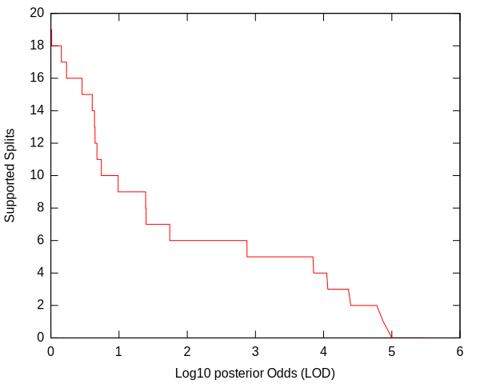
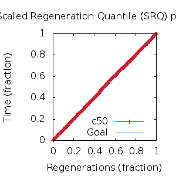
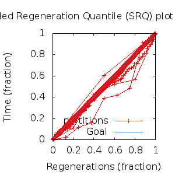

MCMC Post-hoc Analysis: 28 sequences
Data & Model
| Partition | Sequences | Lengths | Alphabet | Substitution Model | Indel Model | Scale Model |
|---|
| 1 |
E5_alpha1_alpha2_gammadelta_delta_aa.fas |
43 - 165 |
Amino-Acids | S1 = lg08+f |
I1 = rs07 |
scale1 ~ gamma[0.5,2] |
Scalar variables
| Statistic | Median | 95% BCI | ACT | ESS | burnin | PSRF-CI80% | PSRF-RCF |
|---|
| prior |
-188.6 |
(-230.6, -149.1) |
17.27 |
15630 |
346
|
1 | 1.002
|
| prior_A1 |
-297.7 |
(-334.9, -263.9) |
6.496 |
41565 |
268
|
1 | 1.003
|
| likelihood |
-3432 |
(-3458, -3407) |
10.48 |
25772 |
127
|
1 | 1.001
|
| posterior |
-3621 |
(-3657, -3588) |
29.11 |
9276 |
255
|
0.9996 | 0.9989
|
| Heat.beta |
1 |
| | | | | |
| Scale[1] |
8.581 |
(5.894, 11.93) |
1.145 |
235810 |
86
|
1 | 1
|
| f:pi[A] |
0.06007 |
(0.04511, 0.0766) |
7.922 |
34080 |
309
|
1 | 1.003
|
| f:pi[R] |
0.01941 |
(0.009172, 0.03198) |
8.165 |
33070 |
378
|
1 | 1.003
|
| f:pi[N] |
0.02885 |
(0.01729, 0.04202) |
7.548 |
35771 |
322
|
0.9996 | 0.9989
|
| f:pi[D] |
0.04502 |
(0.02629, 0.06674) |
7.894 |
34202 |
395
|
1 | 0.9995
|
| f:pi[C] |
0.04898 |
(0.03445, 0.06499) |
8.347 |
32348 |
371
|
1 | 1.003
|
| f:pi[Q] |
0.03875 |
(0.02445, 0.0549) |
9.251 |
29186 |
797
|
1 | 0.9967
|
| f:pi[E] |
0.01932 |
(0.008489, 0.03268) |
8.5 |
31765 |
586
|
1 | 0.9987
|
| f:pi[G] |
0.04036 |
(0.02326, 0.05984) |
8.024 |
33648 |
166
|
1 | 0.9973
|
| f:pi[H] |
0.03429 |
(0.02198, 0.04854) |
7.962 |
33911 |
523
|
0.9998 | 1.001
|
| f:pi[I] |
0.0657 |
(0.05255, 0.07959) |
10.48 |
25759 |
257
|
1 | 0.9982
|
| f:pi[L] |
0.1681 |
(0.143, 0.1945) |
7.662 |
35237 |
203
|
0.9995 | 0.9995
|
| f:pi[K] |
0.03074 |
(0.01702, 0.04711) |
8.317 |
32463 |
598
|
0.9998 | 1
|
| f:pi[M] |
0.01751 |
(0.01139, 0.02465) |
7.681 |
35152 |
386
|
1 | 0.9969
|
| f:pi[F] |
0.06276 |
(0.04794, 0.0785) |
7.911 |
34132 |
382
|
1 | 0.9976
|
| f:pi[P] |
0.02716 |
(0.01304, 0.04399) |
8.397 |
32155 |
438
|
1 | 1.006
|
| f:pi[S] |
0.0593 |
(0.04347, 0.076) |
8.083 |
33403 |
288
|
0.9999 | 1.006
|
| f:pi[T] |
0.07861 |
(0.06087, 0.09754) |
7.721 |
34969 |
332
|
1 | 0.9998
|
| f:pi[W] |
0.01461 |
(0.006509, 0.02445) |
7.763 |
34782 |
498
|
0.9999 | 0.9975
|
| f:pi[Y] |
0.03976 |
(0.02731, 0.05319) |
8.327 |
32425 |
276
|
0.9999 | 1.003
|
| f:pi[V] |
0.0919 |
(0.07535, 0.11) |
9.78 |
27608 |
266
|
0.9996 | 0.9951
|
| rs07:mean_length |
7.657 |
(5.255, 10.8) |
2.744 |
98414 |
145
|
1 | 1.001
|
| rs07:log_rate |
-3.906 |
(-4.274, -3.523) |
2.167 |
124618 |
98
|
1 | 1.001
|
| |A1| |
197 |
(183, 213) |
5.298 |
50964 |
60 |
0.9524 | 1.001
|
| #indels1 |
34 |
(29, 39) |
8.602 |
31388 |
268 |
0.8333 | 1.003
|
| |indels1| |
238 |
(210, 273) |
4.009 |
67355 |
109 |
0.96 | 1
|
| #substs1 |
623 |
(605, 636) |
6.736 |
40083 |
207 |
0.95 | 1.001
|
| Scale1*|T| |
9.719 |
(8.66, 10.83) |
3.642 |
74128 |
163
|
0.9996 | 1.001
|
| |A| |
197 |
(183, 213) |
5.298 |
50964 |
60 |
0.9524 | 1.001
|
| #indels |
34 |
(29, 39) |
8.602 |
31388 |
268 |
0.8333 | 1.003
|
| |indels| |
238 |
(210, 273) |
4.009 |
67355 |
109 |
0.96 | 1
|
| #substs |
623 |
(605, 636) |
6.736 |
40083 |
207 |
0.95 | 1.001
|
| |T| |
1.133 |
(0.7797, 1.533) |
1 |
270003 |
98
|
0.9998 | 1
|
Phylogeny Distribution


Alignment Distribution
Partition 1
|
|
|
Diff |
|
Min. %identity |
# Sites |
Constant |
Informative |
| Initial |
FASTA |
HTML |
Diff |
|
1.39% |
165 |
1 (0.606%) |
162 (98.2%) |
| Best (WPD) |
FASTA |
HTML |
|
AU |
0.787% |
201 |
1 (0.498%) |
188 (93.5%) |
Mixing
Statistics: | scalar burnin | 797 | | scalar ESS | 9276 | | topological ESS | | | ASDSF | NA | | MSDSF | NA | | PSRF CI80% | 1 | | PSRF RCF | 1.006 |
|  |
Analysis
directory: /work/awillemsen/bali-phy/AlphaPVs_E5_aa_new
version: 3.3
| chain # | burnin | subsample | Iterations (after burnin) | command line | subdirectory |
|---|
| 1 |
10000 |
1 |
90000 |
bali-phy E5_alpha1_alpha2_gammadelta_delta_aa.fas -s 53563 -i 100000 -n AlphaPVs_E5_alpha1_alpha2_gammadelta_delta |
AlphaPVs_E5_alpha1_alpha2_gammadelta_delta-1 |
| 2 |
10000 |
1 |
90000 |
bali-phy E5_alpha1_alpha2_gammadelta_delta_aa.fas -s 69831 -i 100000 -n AlphaPVs_E5_alpha1_alpha2_gammadelta_delta |
AlphaPVs_E5_alpha1_alpha2_gammadelta_delta-2 |
| 3 |
10000 |
1 |
90000 |
bali-phy E5_alpha1_alpha2_gammadelta_delta_aa.fas -s 74225 -i 100000 -n AlphaPVs_E5_alpha1_alpha2_gammadelta_delta |
AlphaPVs_E5_alpha1_alpha2_gammadelta_delta-3 |
| P(data|M) = -3459.957 +- 0.255
|
Complete sample: 133632
topologies |
95% Bayesian credible interval: 119022 topologies |
Model and priors
Tree (+priors)
| topology | ~ uniform on tree topologies |
| branch lengths | ~ iid[num_branches[T],gamma[0.5,div[2,num_branches[T]]]] |
Substitution model (+priors)
| S1 | = |
lg08+f
| f:pi | ~ | dirichlet_on[letters[@a],1]
|
|
Indel model (+priors)
| I1 | = |
rs07
| rs07:log_rate | ~ | laplace[-4,0.707]
|
| rs07:mean_length | ~ | exponential[10,1]
|
|
Scales (+priors)
{kind=link}
{kind=link}
{kind=link}
{kind=link}
{kind=link}
{kind=link}
{kind=link}
{kind=link}